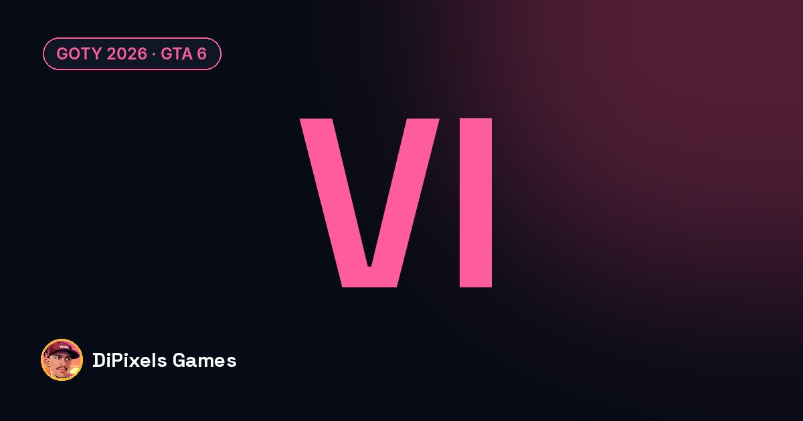
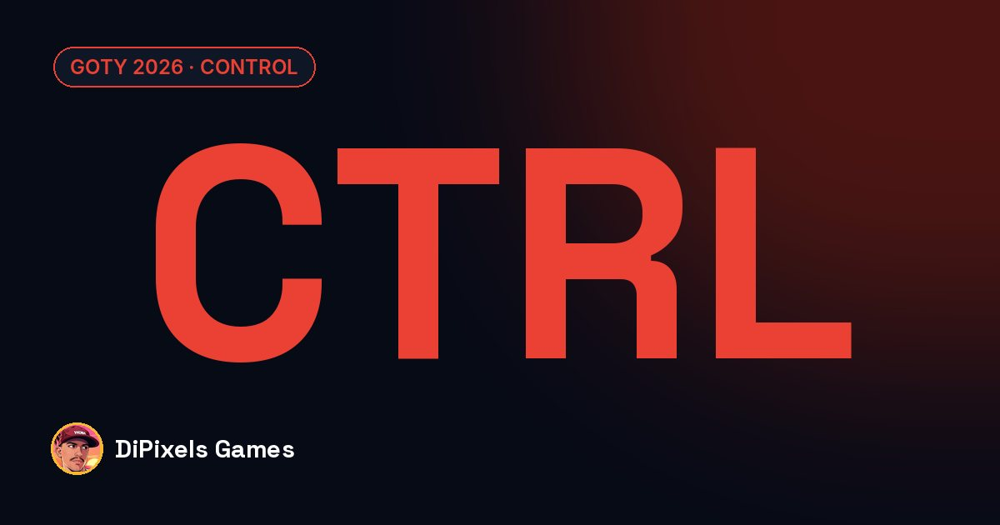
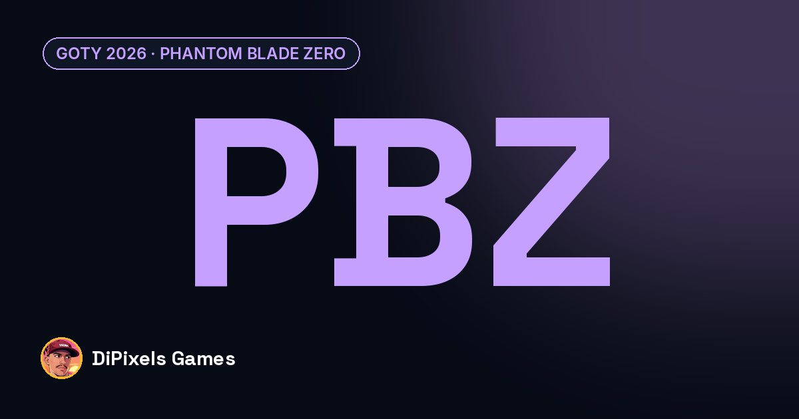
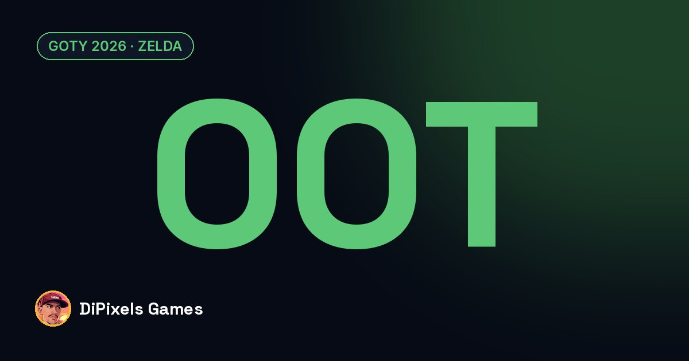
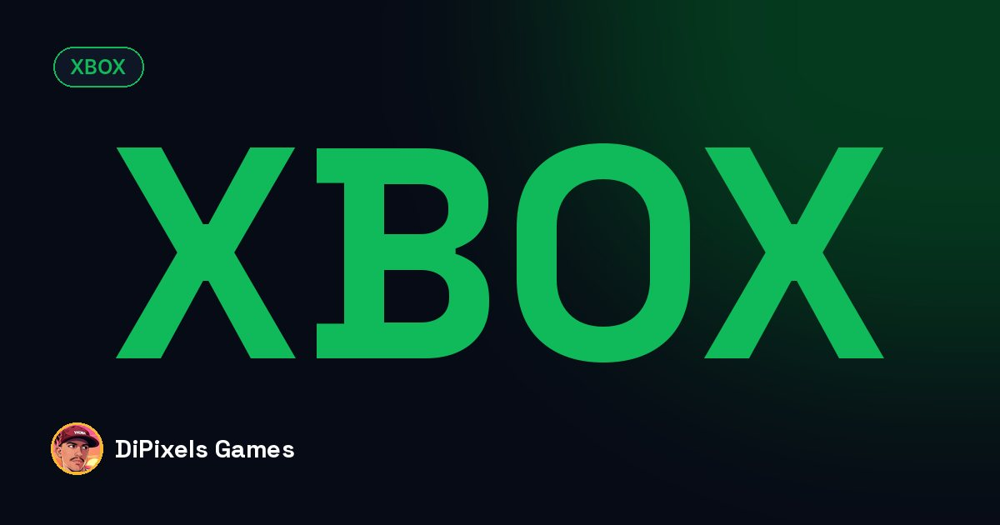

Games, gameplay e hardware sem enrolação.
Guias, análises e dicas do canal DiPixels Games: dos indicados ao GOTY 2026 às promoções que valem o seu dinheiro.
🔥 Ofertas do dia
GOTY 2026: os indicados
 The Game Awards 2026
The Game Awards 2026GOTY 2026: os 6 indicados a Jogo do Ano e o que cada um tem de especial
GTA 6, Resident Evil Requiem, Control Resonant, Phantom Blade Zero, 007 First Light e o remake de Ocarina of Time: o resumo de cada um.

GOTY 2026 · GTA 6GTA 6 chegou: o que você precisa saber antes de jogar
Plataformas, edições, preço no Brasil e o que esperar da versão de PC do Grand Theft Auto VI, o mais indicado do GOTY 2026.
 GOTY 2026 · Resident Evil
GOTY 2026 · Resident EvilResident Evil Requiem: o que tem de especial e se vale a pena
Dois protagonistas, dois estilos de jogo e 30 anos de franquia: o que faz do RE Requiem um dos favoritos ao GOTY 2026.

GOTY 2026 · ControlControl Resonant: o que mudou na continuação da Remedy
Novo protagonista, Manhattan alterada e virada para RPG de ação: o que faz o Control Resonant ser um dos indicados a GOTY 2026.

GOTY 2026 · Phantom Blade ZeroPhantom Blade Zero: o jogo de kung fu que entrou na briga pelo GOTY
Combate inspirado no cinema de Hong Kong, 66 dias de vida e 4 milhões de cópias em três dias: o que é o Phantom Blade Zero.
 GOTY 2026 · 007
GOTY 2026 · 007007 First Light: o melhor jogo de James Bond em décadas?
Um Bond de 26 anos, o estúdio de Hitman e liberdade pra resolver cada missão: o que faz o 007 First Light estar no GOTY 2026.

GOTY 2026 · ZeldaZelda: Ocarina of Time Remake: o que mudou no clássico do Switch 2
Visual refeito, pulo manual, câmera livre e dublagem em português: o que o remake de Ocarina of Time tem de novo.
Consoles e placas de vídeo
 PS5
PS5PS5 Slim ou PS5 Pro: qual comprar em 2026?
Preço no Brasil, diferença de desempenho, leitor de disco e para quem cada modelo faz sentido.
 PS5 Pro
PS5 ProAcessórios que valem a pena pro PS5 Pro (e os que não valem)
Leitor de disco, SSD, controle, headset e suporte: o que comprar primeiro pra tirar o máximo do PS5 Pro.

XboxXbox Series S ou Series X: qual comprar em 2026?
Diferença de desempenho, armazenamento, leitor de disco e o cenário de preço do Xbox no Brasil em 2026.
 Placas de vídeo
Placas de vídeoComo escolher placa de vídeo em 2026 sem gastar errado
Resolução, memória de vídeo, NVIDIA x AMD e fonte: o roteiro pra escolher a GPU certa pro seu uso.
Promoções no seu WhatsApp
Placas de vídeo, consoles, jogos e periféricos com cupom e queda de preço.